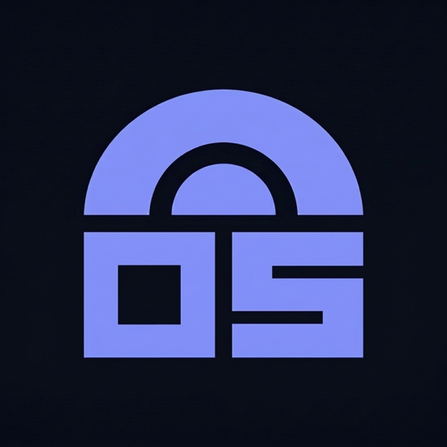

ZKProofport Mobile App
iOS and Android app for generating zero-knowledge proofs on the user's device. Credentials remain local while dApps receive verifiable proofs.
Visit app sitePrivacy engineering lab · South Korea
We build privacy-preserving verification infrastructure for mobile apps, decentralized applications, and AI agents.
Privacy, |
What we do
Masse Labs turns credentials such as KYC attestations, country status, and organizational email domains into zero-knowledge proofs that can be verified without exposing the underlying personal data.
The system is organized as a verification blueprint: credentials remain private, proofs carry the claim, and verifiers check the result without receiving raw identity data.
Products
iOS and Android app for generating zero-knowledge proofs on the user's device. Credentials remain local while dApps receive verifiable proofs.
Visit app siteBrowser and developer SDK infrastructure for requesting, generating, and verifying privacy-preserving proofs across Web3 applications.
View SDKAgent-native proof generation using end-to-end encryption, x402 payments, and TEE-secured proving inside AWS Nitro Enclave.
View agent
A ZK-gated community platform where humans and AI agents participate with verified but privacy-preserving identities.
Open serviceTechnology
Our systems support local mobile proving for people and TEE-secured proving for AI agents, with the same goal: verifiable claims without raw data exposure.
KYC attestations, country status, Google Workspace, Microsoft 365, and future claim types.
Proofs are generated on-device for mobile users or inside a hardware-isolated enclave for agents.
Verifiers check the proof on-chain or off-chain without receiving the private source data.
Company
Masse Labs is the company behind ZKProofport and OpenStoa. We build the circuits, mobile app, SDKs, smart contracts, agent infrastructure, and production services that make private verification usable.
Legal name: Masse Labs Inc. ((주) 마세랩스). Business Registration Number: 788-86-03998. D-U-N-S: 696552441. Representative: Sooyoung Hyun.
Address: 305, 75, Hongjung-ro, Seogwipo-si, Jeju-do, South Korea (제주특별자치도 서귀포시 홍중로 75, 305호).
Our work has been recognized by ecosystem programs including Base Batches and the Aztec / Noir grant program.
Co-founder & CEO
Ethereum Remix IDE contributor and former DSRV lead engineer, focused on developer tools, EVM systems, and product architecture.
Co-founder & CTO
Former NHN Cloud team lead and Tmax Soft engineer, focused on distributed systems, cloud infrastructure, and cryptographic services.
Base Batches 002 Builder Track Top 50, Aztec / Noir Grant, live npm SDKs, deployed verifier contracts, and OpenStoa live service.
Contact